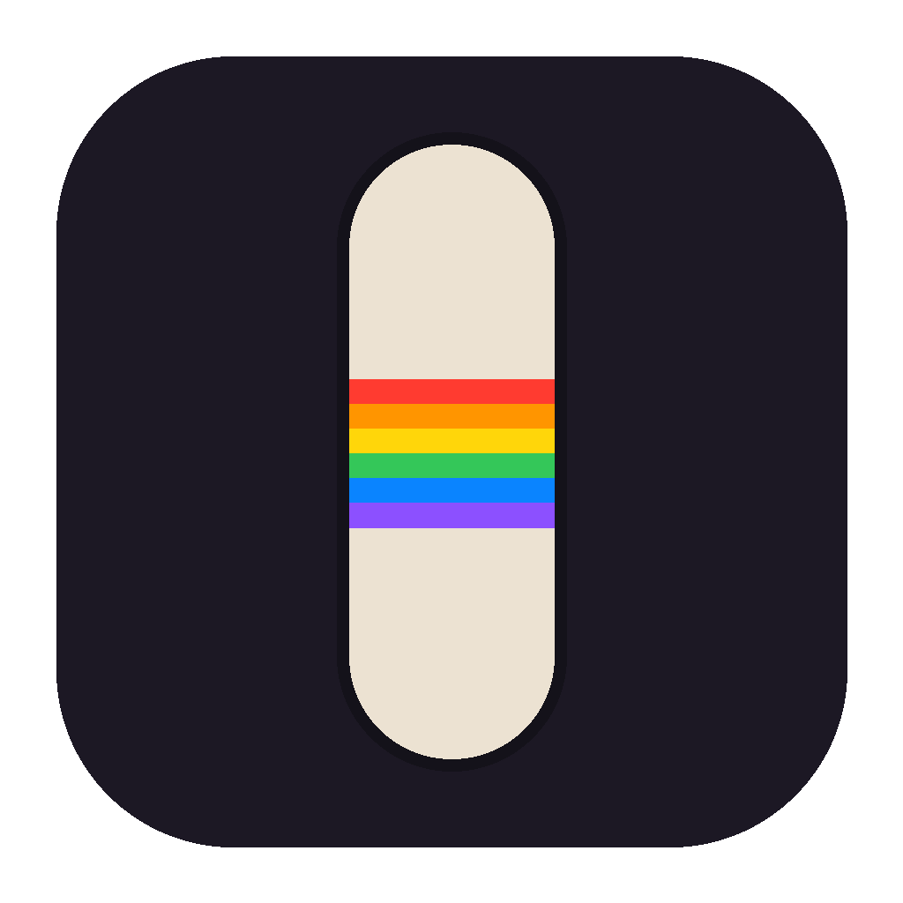

Caveman
Your own decks, wheels and grip tape in skate. through ReSkate: drop a PNG in a folder and ride it. Open source, free.
Download for Windows Latest versionWindows 10 or 11 · skate. on PC with ReSkate 2.1.3 · all versions
Caveman is a Windows program for the PC version of skate. with ReSkate installed. Open this page on that PC to download it.
Then
-
Unzip it into your ReSkate folder
The folder that holds
ReSkateLauncher.exe. You getCaveman.exebeside it and aCavemanfolder with the app, the trainer and the FX DLL. - Let Windows run it Caveman is not signed yet, so SmartScreen asks the first time: More info, then Run anyway.
-
Drop PNGs in
Caveman\Decksand press PlayCaveman.exebuilds your decks into a mod and starts ReSkate's launcher.Caveman\caveman-app.exeis the full launcher: the Studio with the 3D preview, wheels, grips and patterns, Thunderstore packs, and the plugins (the OBS link and the board cam).
Questions
Where does it write?
Inside your ReSkate folder: the mods it builds (Mods\Caveman-Decks, Mods\Caveman-Shaders when a deck needs it) and the Caveman folder with your art and its previews. Its settings live in %APPDATA%\dev.caveman.app. It never touches the game's own files.
How do I remove it?
Delete Caveman.exe, the Caveman folder and the Mods\Caveman-* folders from your ReSkate folder. Your PNGs are yours; move them out first if you want to keep them.
What is the FX DLL?
The optional part behind the plugins: a picture or live video on the board you ride, the soundbars, the board cam window for your stream. It goes into the running game only when you switch the plugins on, and comes out with caveman-trainer unload. Everything is open source, and the downloads here are built by GitHub's own servers from that code.
Does it work with other mods?
Yes. What Caveman builds is an ordinary ReSkate mod next to the others. The Packs page turns your decks and wheels into a Thunderstore package that needs nothing of Caveman to play.